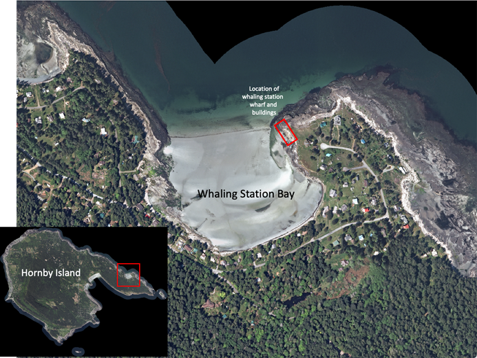

Dawson’s Whaling Operations in the Gulf of Georgia
Thomas Russell’s account of his trip north from Victoria to the Queen Charlotte Islands makes a number of references to whales, which were abundant at the time. His Sunday 25th September 1870 comment relates to the whaling activities of the Dawson Douglass Whaling Co. Ltd. at Whaling Station Bay, Hornby Island. This company was one of a group of whaling companies active in the Salish Sea between 1865–1873.
“We are now abreast of Hornby Island, the wind decreasing very fast. 7:00 PM sighted the place on Hornby Island where Dawson has taken up his whaling quarters, great volumes of smoke rising. I presume they are frying out the oil.”
James Dawson (1818 -1875) and his nephew Alexander Donaldson (1838 –1909), both Scots, had immigrated with family to the United States in 1842. Lured west by the Cariboo Gold Rush, they left Wisconsin in 1861, traversed North America via the Oregon Trail, and arrived in Victoria in March 1862. Initially they worked for E.T. Dodge & Co. freighting miners and their supplies with horse team and wagon on the Cariboo Wagon Road. By late 1863 the duo were running a successful turpentine business, refining that product at Rock Bay (Victoria) from resin tapped from Douglas Fir trees growing in the Saanich area. They sold this business in April 1866.

In 1865 the two, seeing potential profit in supplying the international demand for whale oil, requested pre-emption approval for land at Verdier Point just south of Mill Bay, Vancouver Island, with the aim of setting up a whaling station there. Approval was received on December 15 1865 for 100 acres
“on the west side of Saanich Inlet with a south boundary line to run due west from Tanner Rock for the purpose of establishing a whaling station that would foster home industry in our local waters.”
Two Kanaka (Hawaiian) men and a Danish man were hired to help construct a whaling station along the shore; small boats, fishing line, kettles, stoves and strainers were purchased and put to immediate use in catching dogfish. The healthy profits realized from dogfish oil rendered at their Saanich plant capitalised expansion of the tryworks, acquisition of larger boats, and a focus on whaling.
Though Dawson and Donaldson were moderately successful in their whaling enterprise, they were hampered by inexperience and unsuitable boats. Income from dogfish oil sustained the company over the next two years.
Nowadays, dogfish oil might sound rather exotic, but the then massive dogfish population in the Salish Sea was a ready source of oil for miners’ lamps in the Nanaimo coal mines and as a lubricant for logging skid roads and hand saws.
In 1868, in a move to expand their whaling activities, Dawson and Donaldson purchased the forty six ton, 49’ long and 18’ beam schooner ‘Kate’ and fitted her with whaling equipment. They also hired Captain Abel Douglass (an experienced U.S. eastern seaboard whaler who they had met in San Francisco), with the latter to skipper the Kate and direct her whaling activity.
This increased their catch substantially. Dawson & Co. in 1868 processed in excess of 20 whales, delivering 10,000 gallons of oil (286 barrels at 35 gallons per barrel).
By the spring of 1869 the once plentiful population of whales in the Saanich Inlet area and southern Salish Sea had been depleted. That prompted the company to move and establish a new whaling station at Whaleton Bay (now Whaletown) on Cortes Island.
1869 proved a bumper-year: the partnership harvested 20,000 gallons of whale-oil. It has been estimated that during the year and a half of operation on Cortes Island the company rendered 300 whales, mostly humpbacks. However, by the end of 1869 the price of whale oil had collapsed from a high of $1.20 to 40 cents a gallon.
Possibly due to financial pressures, Dawson & Co. in late 1869 joined with the Lipsett Whaling Company to form the Union Whaling Company. Joint activities in late 1869 and earliest 1870 using the Lipsett’s Howe Sound shore base and tryworks were moderately successful.
Dawson & Co. commenced separate operations again in early 1870 and by May of that year the company had killed 19 whales while operating out of Whaleton.
However, all was not well on Cortes Island. In May 1870 significant damage and loss were incurred at the Whaleton station when it was looted by the local population. Fearing the likelihood of further raids, the company in June announced its decision to relocate to Hornby Island.
In July 1870 Dawson pre-empted 100 acres on what is now known as Whaling Station Bay on Hornby Island and brought materials for a whaling station over from Nanaimo and Victoria, there being little of use remaining on Cortes. In addition to a try works (wood fired boiling vats for rendering oil from the blubber), a wharf, storage sheds, a coopers shed, blacksmith’s forge, a bunkhouse and cook house were erected.
 In July 1870 Dawson & Co. changed name and format from a partnership between James Douglas and his nephew Alexander Donaldson to ‘Dawson Douglass Whaling Co. Ltd.’ Captain Abel Douglass became an active shareholder rather than just an employee and a number of prominent Victoria businessmen became shareholders and effectively took control of the company. The $20,000 share capitalisation was used to purchase additional equipment.
The activities that Thomas Russell noted while sailing past Hornby in September 1870 were those of the Dawson Douglass Whaling Co. Ltd.
The 1870 whaling season was very successful: in January 1871 the steamer ‘Grappler’ delivered, from Hornby, a cargo of 21,000 gallons of oil for shipping to England.
The Grappler was an Albacore Class Screw Gunboat built in 1856 for the service in the Crimean War. In 1859 after being transferred to the Pacific Station she arrived in Esquimalt in July 1860 . Famous (or infamous) for her part in the Lamalchi incident in 1863 during which HMS Forward bombarded a Lamalchi village on Penelakut (formerly Kuper) Island, she was sold in 1868 into commercial service and from then on plied B.C .coastal waters freighting goods and passengers. She sank near Seymour Narrows in April 1883 after an onboard fire with great loss of life.
From this point on, things started to go against the company.
After a significant refit, the schooner Kate, renamed “New Dominion” in recognisance of British Columbia being due to join the Dominion of Canada later that year, was launched April 25th 1871. The schooner set off to hunt May 13th, but within weeks ran aground and was seriously damaged. At considerable expense, she was repaired and re-launched – and renamed Kate in an apparent effort to avoid the bad luck associated by mariners with renaming a vessel.
In May 1871 the name of Dawson and Douglass Whaling Company Limited was changed to “British Columbia Whaling Company Limited. Notably, neither James Dawson nor Abel Douglass remained as shareholders. Alexander Donaldson remained as a minority shareholder.
The 1871 whaling season was less successful than the record breaking 1870 season. Total catch for the company was 12 whales yielding 300 barrels or 7,800 gallons.
A combination of scarcity of whales, low prices and the company being sued resulted in notification in January 1872 of the decision to liquidate The British Columbia Whaling Company. The assets of the company, including the whaling station on Hornby Island and the schooner Kate were put up for public auction and purchased cheaply by its principal shareholders who continued to run a declining and unsuccessful whaling venture - which closed down in 1873.